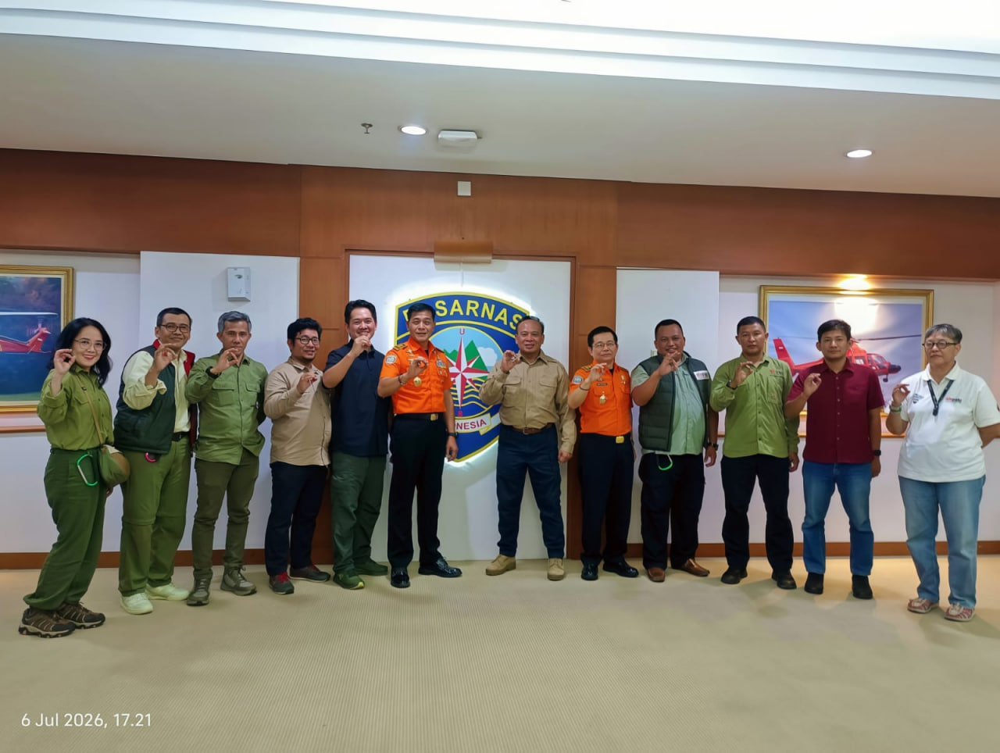

Jakarta, 6 Juli 2026 — Pengurus Besar Federasi Mountaineering Indonesia (PB FMI) melakukan audiensi resmi dengan Badan Nasional Pencarian dan Pertolongan (BASARNAS) pada Senin, 6 Juli 2026. Audiensi dipimpin oleh Ketua Umum PB FMI, Mayor Jenderal TNI Mar (Purn) Buyung Lalana, S.E., dan diterima langsung oleh Deputi Operasi BASARNAS, Mayor Jenderal TNI (Mar) Edy Prakoso, S.E., M.M., beserta Direktur Bina Potensi, Agus Haryono, S.S., M.B.A. Turut hadir dari jajaran PB FMI: Sekretaris Jenderal dr. M. Iqbal El Mubarak, Sp.B., Wakil Sekretaris Jenderal Kolonel Mar Arief Rahman Hakim, Bendahara Connie Ivonne, serta para Kepala Biro dan Kepala Bidang.
Jakarta, July 6, 2026 — The Executive Board of the Indonesian Mountaineering Federation (PB FMI) held an official audience with the National Search and Rescue Agency (BASARNAS) on Monday, July 6, 2026. The meeting was led by PB FMI Chairman Maj. Gen. (Ret.) Buyung Lalana and received by BASARNAS Deputy for Operations Maj. Gen. Edy Prakoso along with Director of Potential Development Agus Haryono. Senior FMI officials also attended, including Secretary General dr. M. Iqbal El Mubarak, Deputy Secretary General Col. Arief Rahman Hakim, Treasurer Connie Ivonne, and heads of various bureaus and divisions.
BASARNAS menyambut hangat silaturahmi PB FMI sebagai salah satu potensi SAR Nasional yang memiliki kapasitas teknis di bidang pendakian dan penyelamatan di medan pegunungan. Dalam pertemuan tersebut, BASARNAS menyarankan FMI untuk segera menyusun Nota Kesepahaman (MOU) guna memformalkan peran FMI dalam ekosistem SAR Nasional. Selain itu, FMI mendapat undangan untuk menempati booth di ajang Indonesia International Search and Rescue (IISAR) yang akan berlangsung pada 9–12 Juli 2026 — sebuah forum bergengsi yang mempertemukan lembaga SAR dari berbagai negara.
BASARNAS warmly welcomed PB FMI's visit, recognizing the federation as a key national SAR potential with specialized technical capabilities in mountaineering and mountain rescue. During the meeting, BASARNAS recommended that FMI promptly formalize a Memorandum of Understanding (MOU) to cement FMI's role within the national SAR ecosystem. Additionally, FMI received an invitation to set up a booth at the Indonesia International Search and Rescue (IISAR) event, scheduled for July 9–12, 2026 — a prestigious forum bringing together SAR agencies from across the globe.

Suasana diskusi dalam audiensi PB FMI dan BASARNAS. Foto: Dokumentasi PB FMI
Discussion during the PB FMI–BASARNAS audience. Photo: PB FMI Documentation
BASARNAS juga meminta FMI untuk aktif menghimbau seluruh komunitas dan potensi SAR yang berada di bawah naungan federasi agar senantiasa berkoordinasi dengan BASARNAS sebelum dan selama pelaksanaan operasi SAR maupun operasi penanggulangan bencana. Hal ini sejalan dengan amanat regulasi nasional yang menempatkan BASARNAS sebagai koordinator tunggal dalam setiap operasi pencarian dan pertolongan di wilayah Indonesia.
BASARNAS also requested that FMI actively encourage all mountaineering communities and SAR potentials under the federation's umbrella to always coordinate with BASARNAS before and during any SAR or disaster relief operation. This aligns with national regulations that designate BASARNAS as the sole coordinator of all search and rescue operations across Indonesian territory.
Audiensi ini menandai langkah strategis PB FMI dalam memperkuat posisi federasi sebagai mitra resmi BASARNAS. Penjajakan MOU yang disepakati dalam pertemuan ini diharapkan menjadi fondasi kolaborasi sistematis antara komunitas mountaineering Indonesia dengan lembaga SAR Nasional — khususnya dalam operasi penyelamatan di kawasan pegunungan yang membutuhkan keahlian teknis pendakian. FMI berkomitmen untuk mengoptimalkan peran seluruh anggotanya sebagai potensi SAR yang siap, terkoordinasi, dan profesional. Salam Ring of Fire.
This audience marks a strategic step for PB FMI in strengthening the federation's position as an official BASARNAS partner. The MOU framework agreed upon in this meeting is expected to become the foundation for systematic collaboration between Indonesia's mountaineering community and the National SAR Agency — particularly for rescue operations in mountain terrain that require specialized climbing expertise. FMI is committed to maximizing its members' role as prepared, coordinated, and professional SAR potential. Salam Ring of Fire.